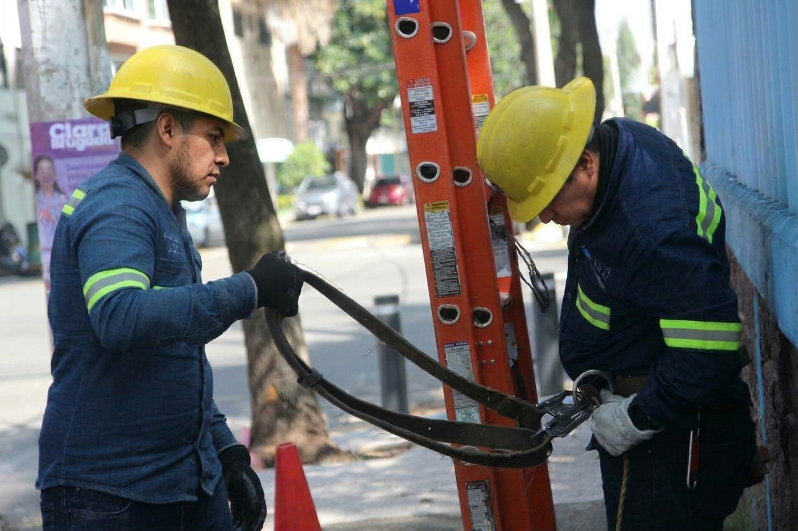

Bienestar y respeto
Promovemos relaciones basadas en el respeto, la dignidad y la colaboración.

 Acerca de Nosotros
Acerca de Nosotros
Nuestro compromiso comienza con la manera en que trabajamos, colaboramos y nos relacionamos con nuestro entorno.
Nuestro entorno
La responsabilidad social se refleja en los principios con los que cuidamos a las personas y realizamos nuestro trabajo.
Nuestro actuar
Estos principios orientan nuestras decisiones y la forma de trabajar en campo y en equipo.
Oportunidades para estudiantes
Tenemos convenio con la UAEM y la UTEZ.
Solicitar información